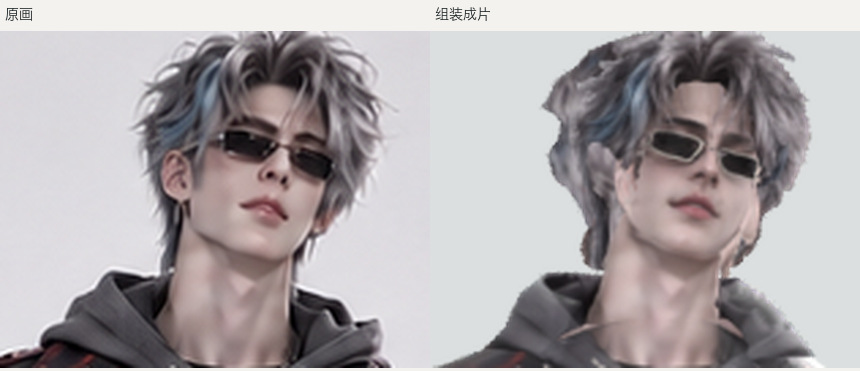
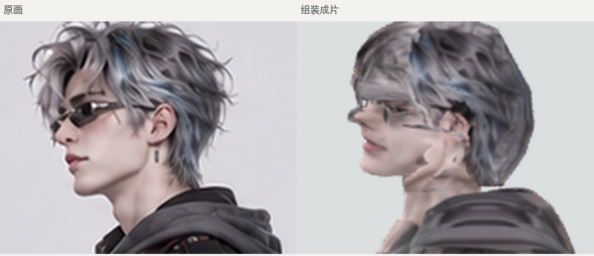
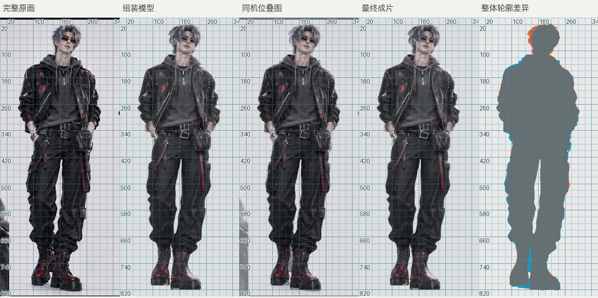
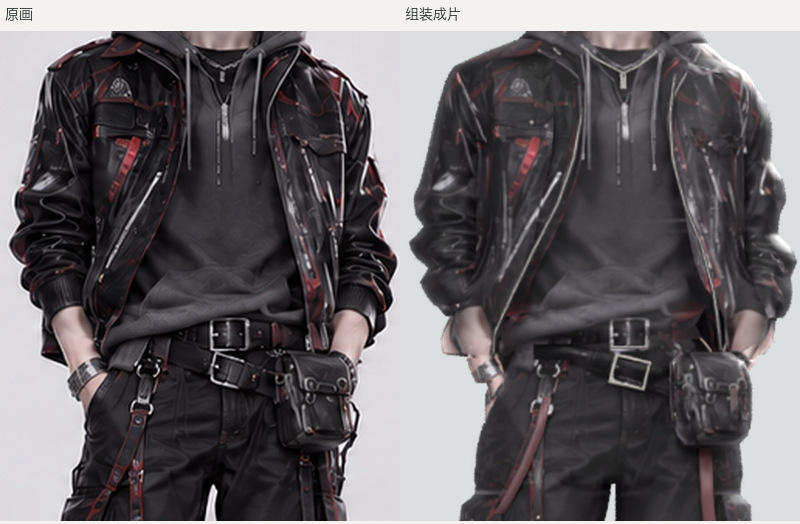
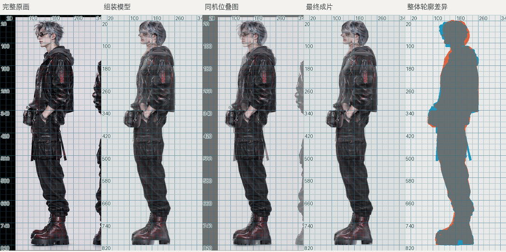
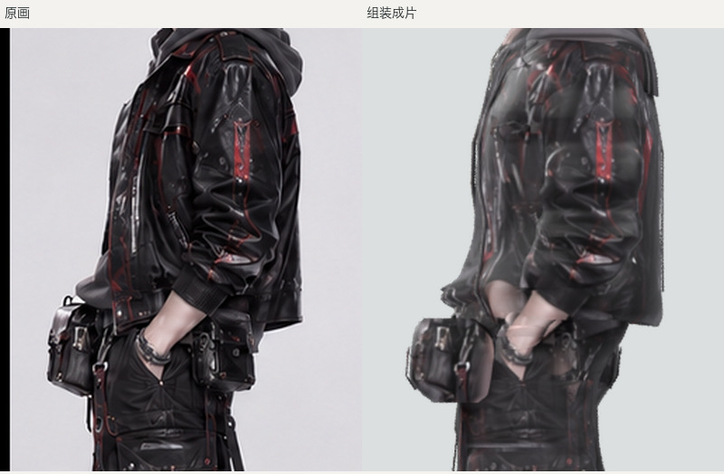
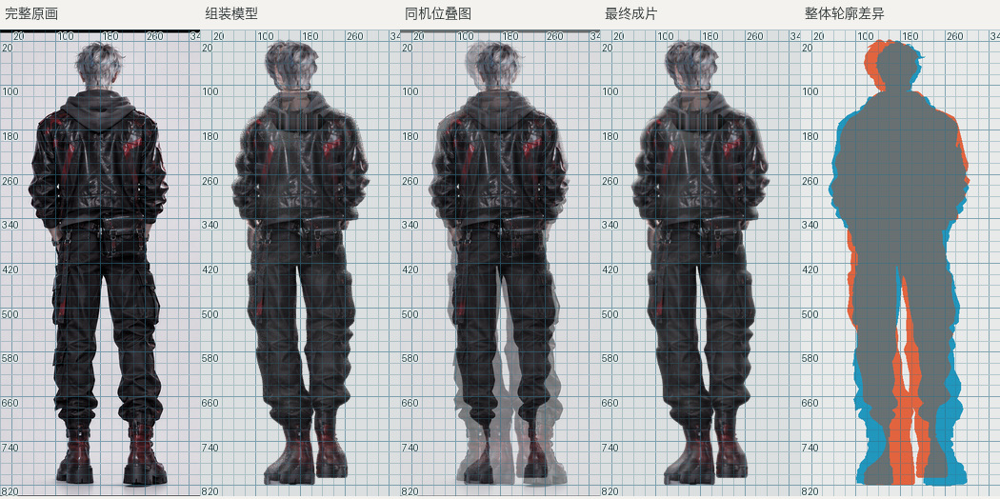
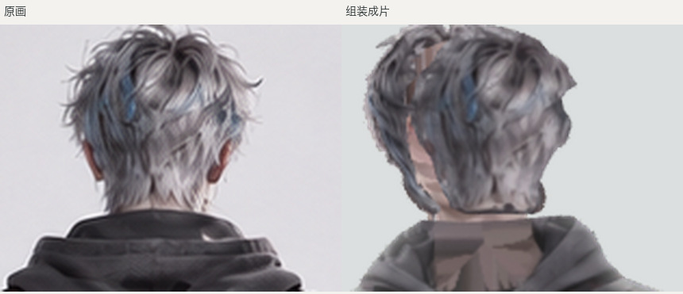
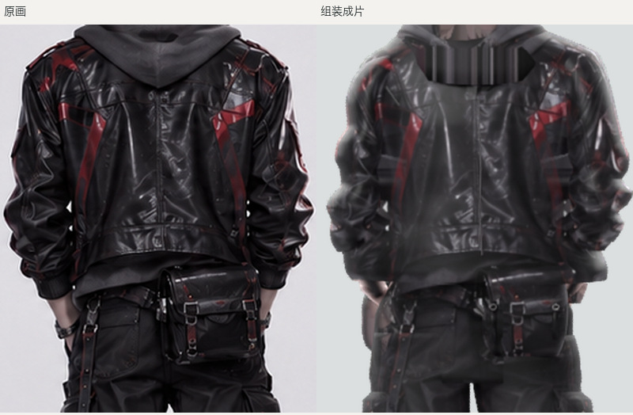

整体与逐件网格对照
蓝色为原画有而模型缺少的区域，橙色为模型多出的区域。灰色为重合，灰紫色为排除区。网格标注采用该栏原画的像素坐标，偏移为模型减原画，向右、向下为正。
逐段边界图中，白线连接模型边与原画目标，蓝圈标目标。红色表示搜索内缺边，紫色表示有多个候选，灰色表示画幅或遮挡证据不足。
完整测量记录
高精度对照 有部位需返修
本次覆盖 3/3 栏、3/3 件。已核对 0 项。
需返修 16 项 front 整体轮廓、front 可见发层、front 头脸与颈部、front 鞋履与鞋底、front 眉眼鼻唇、side 整体轮廓、side 可见发层、side 头脸与颈部、side 鞋履与鞋底、side 额鼻唇颏、back 整体轮廓、back 可见发层、back 头脸与颈部、back 鞋履与鞋底、back 后脑与领口、头脸与颈部多视图面部核对
待核对 3 项 front 敞襟夹克、胯包与工装袋、side 敞襟夹克、胯包与工装袋、back 敞襟夹克、胯包与工装袋
头脸与颈部 · 面部多视图
侧向机位符合配置，绕头部上下轴的夹角 +90.0°，侧面仰俯 -0.0°
正面 需返修
原图裁框 158 × 124 px

同位置细网格 鼻尖 偏差最大，0.79 px，修向原画 (-0.2, -0.8) px侧面 需返修
原图裁框 158 × 124 px

同位置细网格 颏前 偏差最大，15.81 px，修向原画 (+9.0, +13.0) px仍需处理的局部
front

需返修 原尺寸叠图 整体逐段边界定位轮廓交并比 0.960，缺少 3160 px²，多出 1968 px²
包围框左、上、右、下偏移 +0 / -2 / +0 / -2 px
原画沿法线找模型 最大 17.95 px，P95 7.60 px，匹配 3140/3262，搜索内缺边 55，多解 50，画幅不足 17
模型沿法线找原画 最大 17.92 px，P95 6.61 px，匹配 3093/3448，搜索内缺边 294，多解 51，画幅不足 10
最大可定位偏差处，模型 (146.6, 49.9) 向原画位移 (+17.4, -4.4) px造型与神态 需返修
眉眼鼻唇 需返修 头部倾斜和深色镜片清楚，额发分叉处较厚。对照标点 1 右外眼角 2 左外眼角 3 鼻尖 4 唇缝 5 颏点

敞襟夹克、胯包与工装袋 待核对 分件
- 可见发层 需返修 整幅网格 · 局部网格 · 穿戴与遮挡 · 逐段边界定位
轮廓交并比 0.695，缺少 114 px²，多出 1165 px²
包围框左、上、右、下偏移 -11 / -2 / +0 / -4 px
原画沿法线找模型 最大 16.93 px，P95 11.43 px，匹配 530/636，搜索内缺边 42，多解 64，画幅不足 0
模型沿法线找原画 最大 17.61 px，P95 12.31 px，匹配 543/636，搜索内缺边 27，多解 56，画幅不足 10
最大可定位偏差处，模型 (193.2, 52.5) 向原画位移 (+13.7, -11.1) px
- 头脸与颈部 需返修 整幅网格 · 局部网格 · 穿戴与遮挡 · 逐段边界定位
轮廓交并比 0.776，缺少 282 px²，多出 549 px²
包围框左、上、右、下偏移 -1 / +0 / -2 / +10 px
原画沿法线找模型 最大 16.60 px，P95 8.88 px，匹配 331/426，搜索内缺边 19，多解 76，画幅不足 0
模型沿法线找原画 最大 17.59 px，P95 11.77 px，匹配 374/478，搜索内缺边 49，多解 55，画幅不足 0
最大可定位偏差处，模型 (210.5, 67.8) 向原画位移 (+13.1, -11.7) px
- 鞋履与鞋底 需返修 整幅网格 · 局部网格 · 穿戴与遮挡 · 逐段边界定位
轮廓交并比 0.840，缺少 1772 px²，多出 479 px²
包围框左、上、右、下偏移 +0 / -10 / -2 / -2 px
原画沿法线找模型 最大 17.89 px，P95 9.14 px，匹配 597/688，搜索内缺边 67，多解 7，画幅不足 17
模型沿法线找原画 最大 17.92 px，P95 10.01 px，匹配 599/816，搜索内缺边 213，多解 4，画幅不足 0
最大可定位偏差处，模型 (160.9, 709.5) 向原画位移 (-15.2, -9.5) px
side

需返修 原尺寸叠图 整体逐段边界定位轮廓交并比 0.928，缺少 3414 px²，多出 2927 px²
包围框左、上、右、下偏移 -3 / -2 / -1 / -2 px
原画沿法线找模型 最大 17.95 px，P95 13.39 px，匹配 2304/2654，搜索内缺边 186，多解 130，画幅不足 34
模型沿法线找原画 最大 17.96 px，P95 12.03 px，匹配 2436/2774，搜索内缺边 255，多解 74，画幅不足 9
最大可定位偏差处，模型 (133.5, 70.0) 向原画位移 (-11.5, -13.8) px造型与神态 需返修
额鼻唇颏 需返修 前后两栏头部倾角不同，模型的鼻唇颏明显较高。对照标点 1 鼻尖 2 唇缘 3 颏前

敞襟夹克、胯包与工装袋 待核对 分件
- 可见发层 需返修 整幅网格 · 局部网格 · 穿戴与遮挡 · 逐段边界定位
轮廓交并比 0.686，缺少 545 px²，多出 1270 px²
包围框左、上、右、下偏移 +10 / -2 / +5 / +2 px
原画沿法线找模型 最大 17.95 px，P95 14.89 px，匹配 399/590，搜索内缺边 103，多解 88，画幅不足 0
模型沿法线找原画 最大 17.96 px，P95 14.28 px，匹配 507/688，搜索内缺边 138，多解 34，画幅不足 9
最大可定位偏差处，模型 (149.5, 64.0) 向原画位移 (+0.9, -17.9) px
- 头脸与颈部 需返修 整幅网格 · 局部网格 · 穿戴与遮挡 · 逐段边界定位
轮廓交并比 0.697，缺少 828 px²，多出 191 px²
包围框左、上、右、下偏移 +2 / +9 / -3 / +8 px
原画沿法线找模型 最大 18.00 px，P95 17.11 px，匹配 188/360，搜索内缺边 43，多解 129，画幅不足 0
模型沿法线找原画 最大 17.96 px，P95 15.72 px，匹配 413/598，搜索内缺边 163，多解 22，画幅不足 0
最大可定位偏差处，模型 (150.5, 64.0) 向原画位移 (+0.0, -18.0) px
- 鞋履与鞋底 需返修 整幅网格 · 局部网格 · 穿戴与遮挡 · 逐段边界定位
轮廓交并比 0.866，缺少 1026 px²，多出 505 px²
包围框左、上、右、下偏移 +0 / -2 / -1 / -2 px
原画沿法线找模型 最大 17.88 px，P95 9.98 px，匹配 500/578，搜索内缺边 33，多解 11，画幅不足 34
模型沿法线找原画 最大 17.93 px，P95 8.16 px，匹配 514/588，搜索内缺边 56，多解 18，画幅不足 0
最大可定位偏差处，模型 (192.5, 803.1) 向原画位移 (+1.4, +17.9) px
back

需返修 原尺寸叠图 整体逐段边界定位轮廓交并比 0.759，缺少 16075 px²，多出 17744 px²
包围框左、上、右、下偏移 +5 / -2 / +2 / -2 px
原画沿法线找模型 最大 18.00 px，P95 16.04 px，匹配 2252/3564，搜索内缺边 1269，多解 11，画幅不足 32
模型沿法线找原画 最大 18.00 px，P95 16.03 px，匹配 2309/3434，搜索内缺边 1094，多解 24，画幅不足 7
最大可定位偏差处，模型 (254.0, 752.5) 向原画位移 (+18.0, +0.0) px造型与神态 需返修

后脑与领口 需返修 帽体和卷发清楚，原画的背面使用第二帧比较。
敞襟夹克、胯包与工装袋 待核对 分件
- 可见发层 需返修 整幅网格 · 局部网格 · 穿戴与遮挡 · 逐段边界定位
轮廓交并比 0.683，缺少 543 px²，多出 1707 px²
包围框左、上、右、下偏移 -21 / -2 / -11 / +2 px
原画沿法线找模型 最大 16.97 px，P95 11.92 px，匹配 363/494，搜索内缺边 92，多解 39，画幅不足 0
模型沿法线找原画 最大 17.93 px，P95 16.61 px，匹配 340/664，搜索内缺边 277，多解 40，画幅不足 7
最大可定位偏差处，模型 (126.1, 85.5) 向原画位移 (+16.9, -6.1) px
- 头脸与颈部 需返修 整幅网格 · 局部网格 · 穿戴与遮挡 · 逐段边界定位
轮廓交并比 0.016，缺少 143 px²，多出 547 px²
包围框左、上、右、下偏移 -10 / -45 / -22 / +6 px
原画沿法线找模型 最大 16.97 px，P95 14.76 px，匹配 72/182，搜索内缺边 110，多解 0，画幅不足 0
模型沿法线找原画 最大 13.10 px，P95 10.22 px，匹配 69/342，搜索内缺边 273，多解 0，画幅不足 0
最大可定位偏差处，模型 (170.8, 110.1) 向原画位移 (+15.2, -7.6) px
- 鞋履与鞋底 需返修 整幅网格 · 局部网格 · 穿戴与遮挡 · 逐段边界定位
轮廓交并比 0.279，缺少 6813 px²，多出 6695 px²
包围框左、上、右、下偏移 +14 / -14 / -35 / -2 px
原画沿法线找模型 最大 18.00 px，P95 17.50 px，匹配 216/858，搜索内缺边 608，多解 2，画幅不足 32
模型沿法线找原画 最大 17.91 px，P95 17.10 px，匹配 233/810，搜索内缺边 575，多解 2，画幅不足 0
最大可定位偏差处，模型 (264.0, 774.5) 向原画位移 (+18.0, +0.0) px